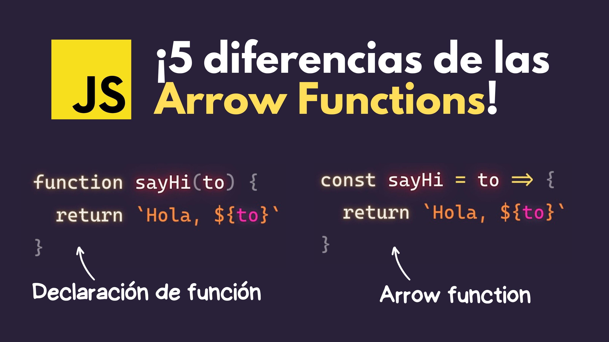
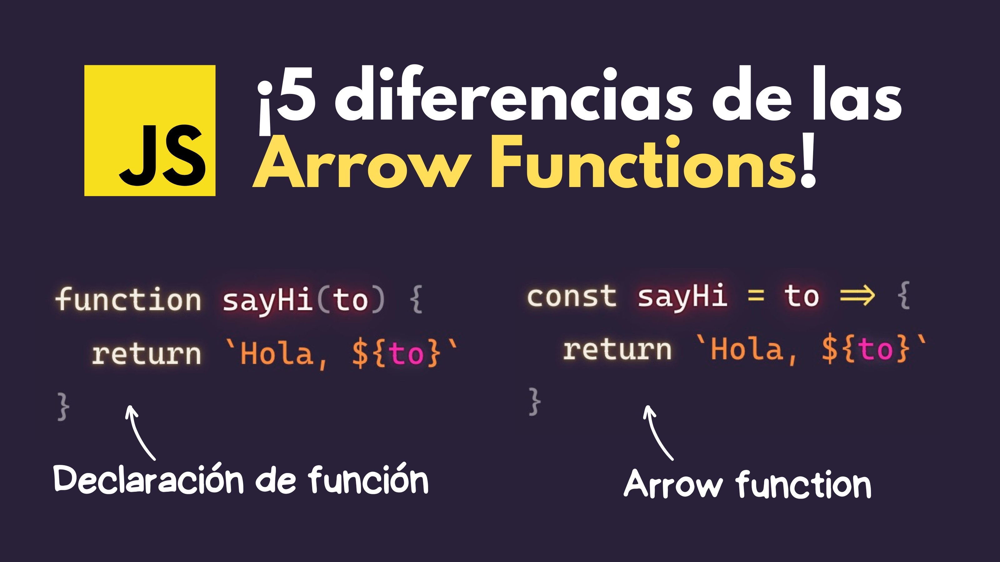

¿Qué es una función?
Una función en JavaScript es un bloque de código reutilizable que realiza una tarea específica o devuelve un resultado. Permite agrupar instrucciones y ejecutarlas cuando las necesitemos.
Son una de las estructuras más importantes del lenguaje, ya que ayudan a mantener el código organizado, limpio y eficiente.
Partes de una función en JavaScript:
Una función típica en JavaScript tiene las siguientes partes:
Indica que estás creando una función.
Sirve para identificarla y llamarla después.
Son los valores que la función recibe al ser llamada. Se colocan entre paréntesis ().
Va entre llaves {} y contiene las instrucciones que ejecutará.
Ejemplo básico de una función:
javascript
Copiar
Editar
function saludar() {
console.log("¡Hola, mundo!");
}
saludar(); // Esto ejecuta la función y muestra el mensaje
Explicación:
Se define una función llamada saludar.
Dentro tiene una instrucción que muestra texto en la consola.
La línea saludar(); es donde llamamos a la función para que se ejecute.
Funciones con parámetros:
Las funciones pueden recibir datos externos (parámetros) para trabajar con ellos.
javascript
Copiar
Editar
function sumar(a, b) {
console.log(a + b);
}
sumar(3, 5); // Resultado: 8
Explicación:
La función sumar recibe dos parámetros: a y b.
Al llamarla, le pasamos los valores 3 y 5.
La función hace la suma y muestra el resultado.
Funciones que devuelven valores (return):
A veces queremos que la función nos devuelva un resultado para usarlo después.
javascript
Copiar
Editar
function multiplicar(x, y) {
return x * y;
}
let resultado = multiplicar(4, 6);
console.log(resultado); // Resultado: 24
Explicación:
La función multiplicar devuelve el resultado de multiplicar x por y.
Luego guardamos ese valor en la variable resultado.
Finalmente mostramos el resultado.
Tipos de funciones en JavaScript:
JavaScript tiene varias formas de crear funciones:1. Declaración de función (Function Declaration):
javascript
Copiar
Editar
function saludar() {
console.log("Hola");
}
✅ Se pueden llamar antes de ser declaradas.
2. Expresión de función (Function Expression):
javascript
Copiar
Editar
const despedir = function() {
console.log("Adiós");
};
✅ Se deben definir antes de poder usarlas.
3. Funciones flecha (Arrow Functions):
Introducidas en ES6, son más compactas.
javascript
Copiar
Editar
const restar = (a, b) => {
return a - b;
};
O más corta aún si tiene solo una línea:
javascript
Copiar
Editar
const cuadrado = x => x * x;
✅ Son ideales para funciones cortas y anónimas.
Parámetros por defecto:
Puedes dar un valor por defecto a los parámetros por si el usuario no pasa uno:
javascript
Copiar
Editar
function saludar(nombre = "Amigo") {
console.log("Hola " + nombre);
}
saludar(); // Hola Amigo
saludar("Bruno"); // Hola Bruno
Funciones anidadas:
Puedes tener funciones dentro de otras:
javascript
Copiar
Editar
function operacion() {
function mostrarMensaje() {
console.log("Ejecutando operación...");
}
mostrarMensaje();
}
operacion();
Importancia de las funciones:
Reutilización de código: Escribes una vez y usas varias veces.
Legibilidad: El código se entiende mejor.
Mantenimiento: Es más fácil modificar un bloque de código dentro de una función que en varios lugares distintos.
Resumen final:
Las funciones en JavaScript son bloques de código reutilizable que pueden recibir datos (parámetros), realizar acciones y devolver resultados. Puedes definirlas de diferentes formas y son esenciales para crear programas ordenados y fáciles de mantener.